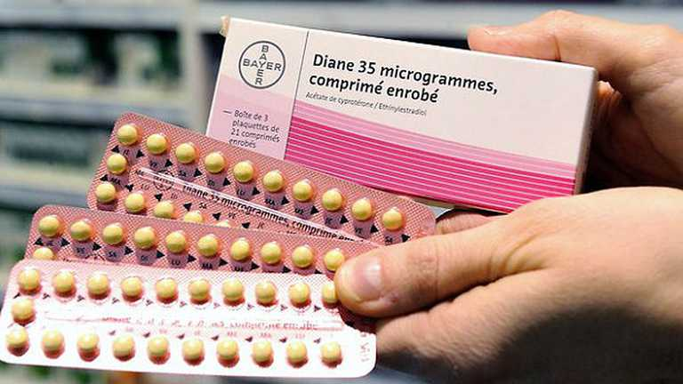
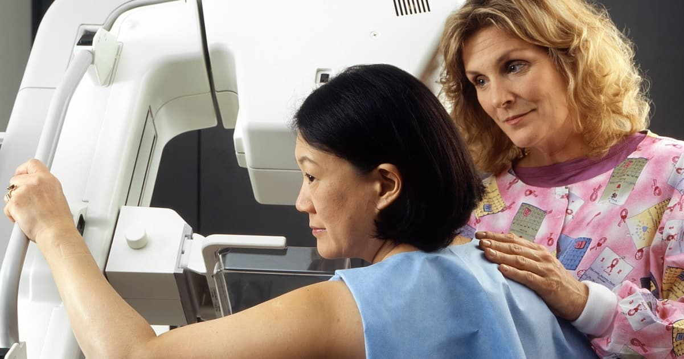
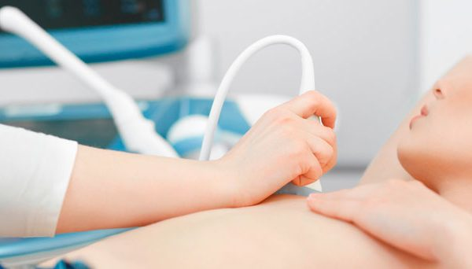
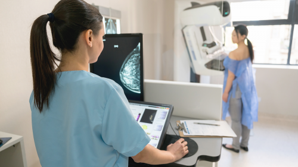
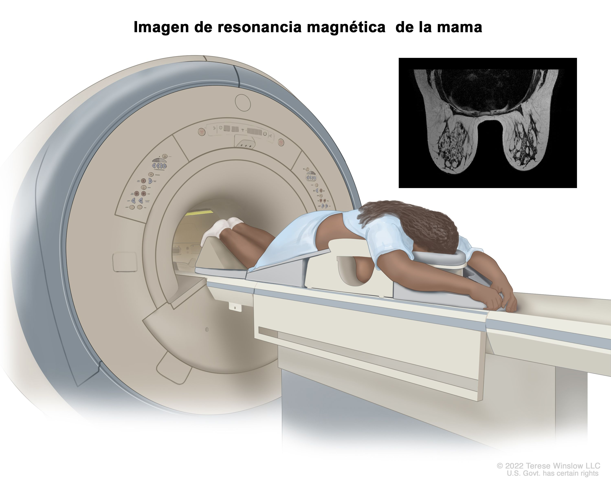
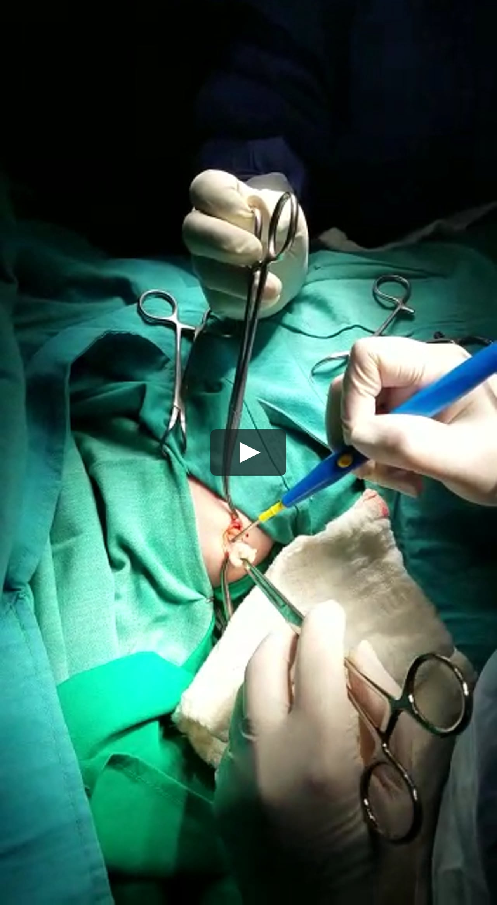

El cáncer de mama es el crecimiento descontrolado de las células mamarias.
Para entender mejor el cáncer de mama, debemos entender cómo se desarrolla cualquier cáncer.
El cáncer es el resultado de los cambios, o cambios anómalos, en los genes que regulan el crecimiento
de las células y las mantienen sanas. Los genes se encuentran en el núcleo de las células,
el cual actúa como la “sala de control” de cada célula. Normalmente, las células del cuerpo se
renuevan mediante un proceso específico llamado crecimiento celular: las células nuevas y sanas
ocupan el lugar de las células viejas que mueren. Pero con el paso del tiempo, las consecuencias
pueden “activar” ciertos genes y “desactivar” otros en una célula. La célula modificada adquirió la
capacidad de dividirse sin ningún tipo de control u orden, por lo que produce más células iguales y genera un tumor.
Un tumor puede ser benigno (no es peligroso para la salud) o maligno (es peligroso potencialmente).
Los tumores benignos no son considerados cancerosos: sus células tienen una apariencia casi normal,
crecen lentamente y no invaden tejidos próximos ni se propagan hacia otras partes del cuerpo.
Los tumores malignos son cancerosos. De no ser controlados, las células malignas pueden
propagarse más allá del tumor original hacia otras partes del cuerpo.
El término “cáncer de mama” hace referencia a un tumor maligno que se ha desarrollado a partir
de células mamarias. Generalmente, el cáncer de mama se origina en las células de los lobulillos,
que son las glándulas productoras de leche, o en los conductos, que son las vías que transportan
la leche desde los lobulillos hasta el pezón. Con menos frecuencia, el cáncer de mama puede
originarse en los tejidos estromales, que incluyen a los tejidos conjuntivos grasos y fibrosos
de la mama.
Con el paso del tiempo, las células cancerígenas pueden invadir el tejido mamario sano y llegar
a los ganglios linfáticos (pequeños órganos que eliminan sustancias extrañas del cuerpo) de las
axilas. Si las células cancerígenas llegan a los ganglios linfáticos, obtienen una puerta de
acceso hacia otras partes del cuerpo. Los estadios del cáncer de mama hacen referencia a lo
lejos que se han propagado las células cancerígenas más allá del tumor original (consulta la
tabla Estadios del cáncer de mama para obtener más información).
El cáncer de mama es una grave amenaza para la salud de la
mujer a nivel mundial y constituye una prioridad no reconocida en los países de ingresos medios. Este trabajo presenta
datos de México y revela que desde 2006 el cáncer de mama
es causante de un mayor número de muertes que el cáncer
cérvicouterino. Esta afección es la segunda causa de muerte
en mujeres de 30 a 54 años de edad y amenaza a todos los
grupos socioeconómicos. Los datos sobre detección, si bien
subreportados, muestran 6 000 nuevos casos en 1990 y se
estima un incremento cercano a 16 500 nuevos casos anuales
para 2020. Más aún, la mayoría de los casos se autodetecta
y sólo 10% de todos los casos se identifica en etapa I.
La seguridad social en México cubre alrededor de 40 a 45%
de la población e incluye tratamiento del cáncer de mama.
A partir de 2007, la población sin seguridad social tiene derecho a tratamiento de cáncer de mama a través del Seguro
Popular de Salud. A pesar de esto, los servicios escasean y
las intervenciones de detección temprana, en particular la
mamografía, son muy limitadas. Desde el año 2006, sólo 22%
de las mujeres de 40 a 69 años se sometió a una mamografía
en el último año.
Existen barreras tanto en la demanda como en la oferta. El cabildeo, la educación, la creación de conciencia
y una respuesta articulada de políticas son importantes para
garantizar una mayor cobertura, acceso y aceptación tanto
del tratamiento como de la detección temprana.
La epidemia del cáncer de mama constituye una
prioridad en salud, ya establecida en los países desarrollados. En los países en desarrollo, por el contrario,
se ha prestado insuficiente atención a este problema
sanitario emergente. La evidencia reciente demuestra
que el cáncer de mama es hoy en día una de las principales causas de muerte y discapacidad entre las mujeres
de países en vías de desarrollo.
En forma paralela, la investigación ha producido nuevas opciones terapéuticas, muchas de las cuales tienen un costo elevado. Por
consiguiente, la epidemia de cáncer de mama representa
un nuevo desafío para el financiamiento y la protección
financiera del sistema de salud, en particular para los
países en desarrollo.
En México, con una población un poco mayor de
100 millones de habitantes, el cáncer de mama es hoy
día uno de los desafíos más importantes para la salud
de la mujer adulta. Esta situación es aún un hecho poco
conocido, ya que además abundan las interpretaciones
erróneas sobre la enfermedad. El cáncer cérvicouterino
se considera todavía una amenaza mucho mayor para la
salud y las vidas de las mujeres pobres y se ha difundido
la creencia de que el cáncer de mama se concentra de
manera notoria en los grupos de nivel socioeconómico
elevado. En realidad, las mujeres de bajos recursos enfrentan hoy día una doble carga a partir de las elevadas
tasas de cáncer de mama y cérvicouterino.
El cáncer de mama es ahora causante, en general, de un mayor
número de muertes en México, comparado con el cáncer
cérvicouterino, y afecta a mujeres adultas de todas las
edades y niveles de ingreso. Actualmente, es la segunda
causa de muerte entre las mujeres mexicanas adultas de
30 a 54 años de edad.2
Con respecto a las políticas, la Secretaría de Salud
amplió y aumentó la normatividad y legislación relativa
al control del cáncer de mama a través de las directrices
técnicas de la Norma Oficial Mexicana.
Se establecieron más rigurosos para vigilar los servicios de salud públicos y privados en la prevención, diagnóstico,
tratamiento, control y vigilancia de la enfermedad.
Para promover la detección temprana, las directrices
hacen énfasis en la autoexploración, el examen clínico
y la mamografía. Se establece un examen clínico anual
realizado por personal capacitado para todas las mujeres de 26 y más años que visitan un centro de salud.
Se recomienda una mamografía anual o bianual para
mujeres de 40 a 49 años con factores de riesgo específicos y una vez al año para todas las mujeres de 50 años
y mayores. Si bien estas directrices son importantes
para ofrecer un marco normativo que abarque a todo el
sector salud, no garantiza los recursos ni la aplicación
de las normas, por lo que la cobertura está muy lejos
de ser la adecuada.
¿Qué puedo hacer para reducir el riesgo de cáncer de mama?
Existen muchos factores en el transcurso de la vida que pueden influir en el riesgo de que tenga cáncer de mama.
Algunos factores no se pueden cambiar, como hacerse mayor o los antecedentes familiares, pero usted puede disminuir
el riesgo de tener cáncer de mama al cuidar su salud de la siguiente manera:
Mantenga un peso saludable.
Haga actividad física.
Elija no tomar alcohol o, si lo hace, tome alcohol en moderación.
Si está recibiendo, o le han dicho que reciba, terapia de reemplazo hormonal o anticonceptivos orales (píldoras anticonceptivas), consulte con su médico acerca de los riesgos y averigüe si es lo mejor para usted.

Si es posible, amamante a sus hijos.
Si tiene antecedentes familiares de cáncer de mama o cambios heredados en sus genes BRCA1 y BRCA2, hable con su médico acerca de otras maneras de reducir su riesgo.
Mantener una buena salud durante toda la vida disminuirá el riesgo de tener cáncer y mejorará las probabilidades de sobrevivir si se enferma de cáncer.
¿Qué son las pruebas de detección del cáncer de mama?
Las pruebas de detección del cáncer de mama consisten en revisar las mamas de la mujer para detectar el cáncer antes de que aparezcan signos o síntomas de la enfermedad.
Todas las mujeres deben recibir información por parte de su proveedor de atención médica acerca de las mejores opciones de pruebas de detección para ellas.
Se llama tomar decisiones informadas y compartidas cuando le comunican los beneficios y riesgos de las pruebas de detección, y usted decide con su proveedor de atención médica
si la prueba de detección es adecuado en su caso—y, en caso afirmativo, cuándo lo tiene. Aunque las pruebas de detección del cáncer de mama no pueden prevenir esta enfermedad,
ellas pueden ayudar a encontrar el cáncer en sus etapas iniciales, cuando es más fácil de tratar. Hable con su médico sobre cuáles son las pruebas de detección del cáncer de mama
adecuadas para usted y cuándo debería hacérselas.

Recomendaciones
El Grupo de Trabajo sobre Servicios Preventivos de los Estados Unidos es una organización formada por médicos y expertos en enfermedades que estudian las investigaciones acerca
de la mejor manera de prevenir enfermedades y recomiendan formas para que los médicos puedan ayudar a sus pacientes a evitar enfermedades o a detectarlas en sus inicios.
El Grupo de Trabajo recomienda que las mujeres entre 50 y 74 años de edad, que tengan un riesgo promedio de cáncer de mama, se hagan una mamografía cada dos años.
Las mujeres entre 40 y 49 años de edad deben hablar con su médico u otro proveedor de la salud sobre cuándo deberían comenzar a hacerse mamografías y con qué frecuencia.
Las mujeres deberían sopesar los riesgos y beneficios de las pruebas de detección para decidir si deben empezar a hacerse mamografías antes de los 50 años de edad.
¿Cómo se diagnostica el cáncer de mama?
Los médicos suelen utilizar pruebas adicionales para detectar o diagnosticar el cáncer de mama. Quizás remitan a las mujeres a un especialista en mamas o a un cirujano.
Esto no significa que ellas tengan cáncer ni que necesiten una cirugía. Estos médicos son expertos en el diagnóstico de problemas mamarios.
Ultrasonido mamario: Una máquina que usa ondas de sonido para producir imágenes, llamadas sonogramas, de áreas dentro de la mama.

Mamografía de diagnóstico: Si usted tiene algún problema en la mama —como un bulto— o si un área de la mama se ve anormal en una mamografía de detección, el médico puede
indicarle que se haga una mamografía diagnóstica. Esta es una radiografía más detallada de la mama

Imagen por resonancia magnética (IRM) de las mamas: Un tipo de escaneo del cuerpo que usa un imán conectado a una computadora. La resonancia magnética creará imágenes detalladas de áreas dentro de la mama.

Biopsia. Esta es una prueba en la que se extirpa tejido o se saca líquido de la mama para estudiarse bajo el microscopio o para hacer más pruebas. Existen distintos tipos de biopsias
(por ejemplo, aspiración con aguja fina, biopsia con aguja gruesa o biopsia abierta).

¿Qué es una mamografía?
Una mamografía es una imagen de la mama tomada con rayos X. Los médicos usan las mamografías para buscar signos de cáncer de mama en sus etapas iniciales.
Las mamografías habituales son las mejores pruebas con que cuentan los médicos para detectar el cáncer de mama en sus etapas iniciales, a veces hasta tres años antes de que se pueda sentir.
Usted se colocará de pie frente a una máquina especial de rayos X. Una tecnóloga colocará su mama sobre una placa de plástico.
Después cubrirá esa mama con otra placa, presionando firmemente. Las placas aplanarán la mama y la mantendrán inmóvil mientras se toma la radiografía. Usted sentirá algo de presión.
Los pasos se repiten para tomar una imagen del costado de la mama. Posteriormente, le sacarán una radiografía a la otra mama de la misma forma. Deberá esperar a que la tecnóloga
revise las radiografías para asegurarse de que no haya necesidad de volver a tomarlas.
Tenga presente que la tecnóloga no puede decirle los resultados de su mamografía. Las mamografías de cada mujer pueden verse un poco distintas porque no hay mujeres con mamas idénticas.